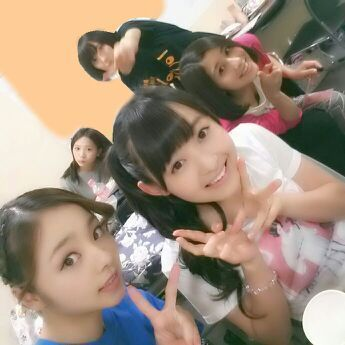
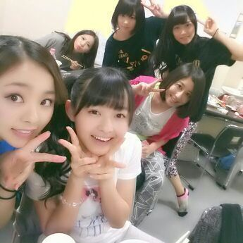
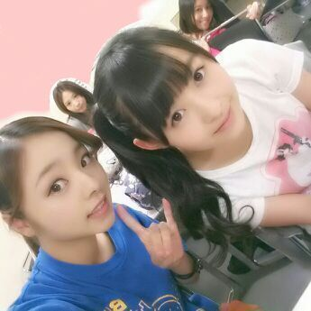

は----い＼(^o^)／
今日もこんばんわぁ---ん。
ろってぃ-です //
全国ツアー初日 北海道 札幌、
お疲れ様でしたー(・ω・)！
楽屋にて。

いつもおろしている髪の毛を
今回は 編み込みポニーで
まとめてみました \(´▽`)/
後ろにいるのは
あにあに、らりん、まいまい、ちはる^^

札幌まで来てくださった皆さん、
本当にありがとうございました！！
やっぱり ライブは最高だし
皆と一緒に 歌って踊って跳ねて
汗も いっぱいかけたね (。・ω・。)
ファンの皆さんも自分自身も
もっと わいてしまう様なliveに
して行きます★！！
正直、反省点も
いっぱいあります ！
来て頂いた人 １人残らず
楽しんでもらって帰れたか？
って聞かれると
正直 自信ありません！
もっともっと自分たちなら
上を目指せるんちゃうか って
思います！
頑張ります☆★☆
高3同士、まひろ と まりかだぉ(・ω・)

晩御飯は 最高においちかったよ♪
ちょ-しのって勢いで食べ過ぎて
お腹ぱんぱんになったよ(・▽・)
海鮮類
まひろ あみ 生駒 あすか。
めっちゃ笑ったし楽しかった☆
これはすべらんやろう。思う話したら
爆笑してくれた 笑。
でも、あの話は blogやテレビでは
NGやなっ あはん♪しーっ
ではではっ おやすみなさい♪